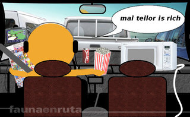

Mon, 19 Nov 2012 19:02:09 GMT
Si vendes coches, ten cuidado con lo que pones en redes sociales
Si vendes coches, ten cuidado con lo que pones en redes sociales
Este Land Rover Discovery hizo aguas Este es tu coche. Este es tu coche bajo los efectos de las drogas. Con esta leyenda se tituló esta foto, aparecida en el perfil de Facebook de Robert Becker, un empleado del concesionario BMW de Karl Knauz en Chicago (EEUU). Cuando se enteraron en la dirección, le despidieron por poder afectar a la reputación del concesionario. Esto ocurrió en 2010, y fueron a juicio. La NLRB (algo así como Comité/Observatorio Nacional de Relaciones Laborales) ha dictaminado que el despido por publicar esa foto en su perfil personal es legítimo, pero que cuando hizo chanzas por el mismo medio de su concesionario repartiendo perritos calientes presentando el BMW Serie 5, estaba haciendo uso de su libertad de expresión en ámbito privado (protected speech en inglés). Se da la circunstancia de que Karl Knauz tiene varios concesionarios, y también vende Land Rover. Dicho de otra forma, Becker acabó afectando a la reputación de sus jefes. Ahora bien, ¿dónde está el límite respecto a lo que un empleado puede decir de la empresa en la que trabaja, en su perfil personal? Esto nos lleva a un interesante debate legal, en el que los empleadores deben dejar claro en sus contratos lo que supone extralimitarse en el ejercicio de la libertad de expresión, sin que ello suponga un desánimo para aquellos empleados que quieran usar redes sociales para ser más cercanos a sus clientes o potenciales clientes. Lo de las redes sociales está muy bien, hasta que un día descubres que tus competidores te llaman cachondeándose con cosas como “¿Laváis ahora así vuestros coches?” o hablando de “Carreras de submarinos”. Me estoy refiriendo a legislación estadounidense, pero un día podemos ver un caso así en España (yo no conozco ninguno). Ni es el primero ni el último caso en el que un empleado se mete en líos por lo que cuenta en su perfil de una red social, abierta al acceso libre. Considero que criticar a tus jefes o a tu empresa, sabiendo que te pueden leer, es poco inteligente, de la misma forma que no se diría eso a la cara a un superior. Fuente | Automotive News
Este Land Rover Discovery hizo aguas
Este es tu coche. Este es tu coche bajo los efectos de las drogas.
Con esta leyenda se tituló esta foto, aparecida en el perfil de Facebook de Robert Becker, un empleado del concesionario BMW de Karl Knauz en Chicago (EEUU). Cuando se enteraron en la dirección, le despidieron por poder afectar a la reputación del concesionario. Esto ocurrió en 2010, y fueron a juicio.
La NLRB (algo así como Comité/Observatorio Nacional de Relaciones Laborales) ha dictaminado que el despido por publicar esa foto en su perfil personal es legítimo, pero que cuando hizo chanzas por el mismo medio de su concesionario repartiendo perritos calientes presentando el BMW Serie 5, estaba haciendo uso de su libertad de expresión en ámbito privado (protected speech en inglés).
Se da la circunstancia de que Karl Knauz tiene varios concesionarios, y también vende Land Rover. Dicho de otra forma, Becker acabó afectando a la reputación de sus jefes. Ahora bien, ¿dónde está el límite respecto a lo que un empleado puede decir de la empresa en la que trabaja, en su perfil personal?
Esto nos lleva a un interesante debate legal, en el que los empleadores deben dejar claro en sus contratos lo que supone extralimitarse en el ejercicio de la libertad de expresión, sin que ello suponga un desánimo para aquellos empleados que quieran usar redes sociales para ser más cercanos a sus clientes o potenciales clientes.
Lo de las redes sociales está muy bien, hasta que un día descubres que tus competidores te llaman cachondeándose con cosas como “¿Laváis ahora así vuestros coches?” o hablando de “Carreras de submarinos”. Me estoy refiriendo a legislación estadounidense, pero un día podemos ver un caso así en España (yo no conozco ninguno).
Ni es el primero ni el último caso en el que un empleado se mete en líos por lo que cuenta en su perfil de una red social, abierta al acceso libre. Considero que criticar a tus jefes o a tu empresa, sabiendo que te pueden leer, es poco inteligente, de la misma forma que no se diría eso a la cara a un superior.
Fuente | Automotive News
Mon, 19 Nov 2012 15:00:32 GMT
Land Rover Defender Harris Tweed Edition por Khan
Land Rover Defender Harris Tweed Edition por Khan
A la hora de elegir un auténtico todoterreno existen muy diversas opciones pero seguro que en nuestra lista han de estar tanto el Mercedes-Benz Clase G como el Land Rover Defender, dos modelos que llevan muchísimos años al pie del cañon y que, aunque modernizados, conservan la esencia y el robusto diseño de sus predecesores. En este caso vamos a hablar del segundo, el Land Rover Defender, ya que el diseñador británico Afzal Kahn (anteriormente conocido por su compañía, Project Kahn) ha creado una edición especial bajo el nombre de Harris Tweed Edition. En este caso las capacidades off-road del Defender quedan en un segundo plano (aunque se mantienen) y toma mayor importancia el diseño y la exclusividad del vehículo. Por fuera encontramos elementos de nuevo diseño como las tomas de aire de las aletas, extensiones de los pasos de rueda, las salidas de escape, llantas diseñadas por el propio Kahn, faros en tecnología LED, la parrilla frontal o distintivos “Kahn”. No obstante, es en el interior donde el Harris Tweed que da nombre a la preparación toma protagonismo. Este tejido típico escocés está presente en los asientos de tipo bucket, el salpicadero, los paneles de las puertas y la consola. Galería de fotos (Haz click en una imagen para ampliarla)
Vía | Auto Evolution
A la hora de elegir un auténtico todoterreno existen muy diversas opciones pero seguro que en nuestra lista han de estar tanto el Mercedes-Benz Clase G como el Land Rover Defender, dos modelos que llevan muchísimos años al pie del cañon y que, aunque modernizados, conservan la esencia y el robusto diseño de sus predecesores.
En este caso vamos a hablar del segundo, el Land Rover Defender, ya que el diseñador británico Afzal Kahn (anteriormente conocido por su compañía, Project Kahn) ha creado una edición especial bajo el nombre de Harris Tweed Edition. En este caso las capacidades off-road del Defender quedan en un segundo plano (aunque se mantienen) y toma mayor importancia el diseño y la exclusividad del vehículo.
Por fuera encontramos elementos de nuevo diseño como las tomas de aire de las aletas, extensiones de los pasos de rueda, las salidas de escape, llantas diseñadas por el propio Kahn, faros en tecnología LED, la parrilla frontal o distintivos “Kahn”. No obstante, es en el interior donde el Harris Tweed que da nombre a la preparación toma protagonismo. Este tejido típico escocés está presente en los asientos de tipo bucket, el salpicadero, los paneles de las puertas y la consola.
Galería de fotos
(Haz click en una imagen para ampliarla)
Vía | Auto Evolution
Mon, 19 Nov 2012 13:00:35 GMT
Turquía quiere crecer gracias a la industria del automóvil
Turquía quiere crecer gracias a la industria del automóvil
Inmune en cierta manera a la crisis económica europea, Turquía sigue contando con un sector del automóvil que es, sin duda, el más potente de su economía gracias a la producción tanto de automóviles como de componentes, recambios y servicios asociados a éste. Desde el gobierno turco miran con optimismo hacia el futuro y tienen importantes planes de crecimiento en la próxima década, ya que pretenden convertirse en la décima economía mundial allá por 2023 (año del centenario de la república turca) apoyándose, sobre todo, en la industria automovilística y en todas las ramas relacionadas con ésta, a pesar de que las ventas en su mercado se han reducido en torno a un 10% este año. Gracias a fabricantes como Fiat, Renault, Ford, Toyota, Honda o Hyundai (y otros tantos más, hasta trece), que producen sus coches en Turquía, el sector del automóvil es el más fuerte del país. Durante 2011 se produjeron allí 1,2 millones de coches y en 2023 pretenden superar las 4 millones de unidades, aumentando el valor de las exportaciones de 20.000 a 75.000 millones de dólares. Vía | Auto Evolution En Motorpasión | Turquía quiere su propio gran fabricante de coches
Inmune en cierta manera a la crisis económica europea, Turquía sigue contando con un sector del automóvil que es, sin duda, el más potente de su economía gracias a la producción tanto de automóviles como de componentes, recambios y servicios asociados a éste.
Desde el gobierno turco miran con optimismo hacia el futuro y tienen importantes planes de crecimiento en la próxima década, ya que pretenden convertirse en la décima economía mundial allá por 2023 (año del centenario de la república turca) apoyándose, sobre todo, en la industria automovilística y en todas las ramas relacionadas con ésta, a pesar de que las ventas en su mercado se han reducido en torno a un 10% este año.
Gracias a fabricantes como Fiat, Renault, Ford, Toyota, Honda o Hyundai (y otros tantos más, hasta trece), que producen sus coches en Turquía, el sector del automóvil es el más fuerte del país. Durante 2011 se produjeron allí 1,2 millones de coches y en 2023 pretenden superar las 4 millones de unidades, aumentando el valor de las exportaciones de 20.000 a 75.000 millones de dólares.
Vía | Auto Evolution
En Motorpasión | Turquía quiere su propio gran fabricante de coches
Mon, 19 Nov 2012 11:00:42 GMT
El Plan PIVE ha recibido 24.000 reservas de 75.000 posibles
El Plan PIVE ha recibido 24.000 reservas de 75.000 posibles
Debido a temas informáticos y administrativos, el Plan PIVE no empezó a ser efectivo hasta la segunda quincena de octubre, por lo cual no tuvo mucho impacto en las ventas del mes pasado. Según los datos provisionales del IDAE, parece que no está siendo tan buenos como algunos pensábamos, de momento. A fecha del 12 de noviembre, se han hecho 24.000 reservas, de las cuales se han ejecutado 2.362 operaciones y un consumo de 2,362 millones de euros (1.000 euros por coche de parte del Estado). De un total de 75 millones de euros, hablamos del ~3% del presupuesto hasta abril de 2013. Los coches entregados para desguace tenían 16 años de media. Se han beneficiado 1.318 turismos con motor Diesel, 1.005 a gasolina, 36 híbridos, 2 coches a GLP y un eléctrico. Este aumento de matriculaciones en un mes siguen siendo insuficientes para poner el mercado español en números no-rojos. Tendremos que esperar al 3 de diciembre para conocer los datos de matriculaciones y su impacto en noviembre. Fuente | El Economista En Motorpasión | Las matriculaciones caen un 21,7% en octubre a pesar del PIVE
Debido a temas informáticos y administrativos, el Plan PIVE no empezó a ser efectivo hasta la segunda quincena de octubre, por lo cual no tuvo mucho impacto en las ventas del mes pasado. Según los datos provisionales del IDAE, parece que no está siendo tan buenos como algunos pensábamos, de momento.
A fecha del 12 de noviembre, se han hecho 24.000 reservas, de las cuales se han ejecutado 2.362 operaciones y un consumo de 2,362 millones de euros (1.000 euros por coche de parte del Estado). De un total de 75 millones de euros, hablamos del ~3% del presupuesto hasta abril de 2013. Los coches entregados para desguace tenían 16 años de media.
Se han beneficiado 1.318 turismos con motor Diesel, 1.005 a gasolina, 36 híbridos, 2 coches a GLP y un eléctrico. Este aumento de matriculaciones en un mes siguen siendo insuficientes para poner el mercado español en números no-rojos. Tendremos que esperar al 3 de diciembre para conocer los datos de matriculaciones y su impacto en noviembre.
Fuente | El Economista
En Motorpasión | Las matriculaciones caen un 21,7% en octubre a pesar del PIVE
Mon, 19 Nov 2012 09:02:47 GMT
"Combustión" estará en los cines en abril
"Combustión" estará en los cines en abril
Nivel Maribel en los coches de la película “Combustión” Se está terminando el rodaje de la última película de Daniel Calpalsoro, que os puede sonar por "Invasor" o “Guerreros”. Es una producción que nos meterá en el mundillo de las carreras ilegales de coches en España y contará con Alex González, Adriana Ugarte y Alberto Ammann. ¡Dejad de pensar! No veremos piques entre Saxos, Leones o Astras tuneados con dados colgando del retrovisor. Será algo con más caché. En una imagen de rodaje se ven claramente dos Ferrari* (430 Spider y 458 Italia), un Lamborghini Gallardo y un Porsche Panamera Turbo. El típico cani español solo tiene esos coches en sus fondos de pantalla del móvil. Detrás de la película está el dinero de Antena 3, bienvenido sea si eso permite tener esos protagonistas mecánicos. El estreno se producirá un mes antes que Fast 6, la última entrega de la saga "The Fast and The Furious". Es de agradecer una buela película española que no vaya sobre la Guerra Civil, sobre fo***r o sobre EMOs empanados y sus movidas. Por cierto, se empezó a rodar a finales de septiembre. Como la película tenga un ritmo tan trepidante seguro que no nos decepciona. NOTA: El título de la película y el hecho de que haya Ferraris dudo que tenga relación alguna… ¿o no? Vía | Motor.es En Motorpasión | Fast 6 llega el año que viene, ya se está rodando
Nivel Maribel en los coches de la película “Combustión”
Se está terminando el rodaje de la última película de Daniel Calpalsoro, que os puede sonar por "Invasor" o “Guerreros”. Es una producción que nos meterá en el mundillo de las carreras ilegales de coches en España y contará con Alex González, Adriana Ugarte y Alberto Ammann.
¡Dejad de pensar! No veremos piques entre Saxos, Leones o Astras tuneados con dados colgando del retrovisor. Será algo con más caché. En una imagen de rodaje se ven claramente dos Ferrari* (430 Spider y 458 Italia), un Lamborghini Gallardo y un Porsche Panamera Turbo. El típico cani español solo tiene esos coches en sus fondos de pantalla del móvil.
Detrás de la película está el dinero de Antena 3, bienvenido sea si eso permite tener esos protagonistas mecánicos. El estreno se producirá un mes antes que Fast 6, la última entrega de la saga "The Fast and The Furious". Es de agradecer una buela película española que no vaya sobre la Guerra Civil, sobre fo***r o sobre EMOs empanados y sus movidas.
Por cierto, se empezó a rodar a finales de septiembre. Como la película tenga un ritmo tan trepidante seguro que no nos decepciona.
NOTA: El título de la película y el hecho de que haya Ferraris dudo que tenga relación alguna… ¿o no?
Vía | Motor.es
En Motorpasión | Fast 6 llega el año que viene, ya se está rodando
Mon, 19 Nov 2012 06:00:00 GMT
Las manos, siempre al volante
Las manos, siempre al volante
A ver cómo mantenemos las formas hoy sin perder mucho el norte, porque la noticia que me empuja a escribirte estas líneas, por cortesía de Biballo, tiene su dosis de cachondeo. O eso me parece a mí, claro, que luego siempre sabes cómo sorprenderme y resulta que lo que yo me creía que sí era que no, y viceversa. Vamos con una de esas cuestiones que tiene miga: ¿Cómo se agarra el volante? Hace un lustro más o menos, decían las estadísticas que el 80 % de los conductores no tomaban el volante de forma correcta. Asirlo por los radios, pillarlo por la parte más alta o sujetarlo por lo más bajo, mejor con una sola mano, son algunos vicios de la conducción fáciles de encontrar en esta fauna en ruta nuestra de todos los días. Luego los hay que pierden el control del coche y no saben por qué. Sin embargo, creo que lo que vamos a ver hoy pasa va un poquito más allá. Desde luego, existen varias técnicas para asir el volante. Yo soy de los de “tracción – empuje” manque pierda, pero me consta que hay otras maneras. Eso sí, la que sigue no me suena de haberla visto en ninguna parte. Salvo en esta foto, claro: Lo primero es explicar que aunque la historia nos haya llegado estos días, según un tal Google la foto en cuestión se conoce en internet desde, por lo menos, agosto de 2007, que es cuando se publicó en Fotos da hora, y ahí se ve que el coche fue cazado a 92 km/h en una zona limitada a 80 km/h. Bueno, se ve eso… y todo lo demás. Lo segundo es contar la historia, claro. Nada, el señor Den Jialin, que iba en el coche acompañado de alguien que no era su señora esposa, pasó por el punto del radar con exceso de velocidad, y cuando llegó la multa a casa se lió parda. Cuentan las crónicas que el marido se excusó diciendo que la foto era un montaje. En fin… Hacer cosas que no vienen a cuento cuando estamos en el coche es una de esas actividades que acompañan a la conducción diaria. No le damos mayor importancia, pero la tiene. La distracción sigue siendo uno de los mayores factores de riesgo de la conducción, no lo olvidemos. De hecho, se estima que un 25 % de la siniestralidad vial es en parte fruto de la distracción. Ah, sí, te he hecho una finta. Concentrarse viene de con- y -centro Volvamos al manco de Lepanto Asia. Si el señor Den Jialin ha sobrevivido al episodio que se vivió en su hogar, que no lo sé, y si yo hablara su idioma y tuviera la ocasión de comentar la jugada con él dejando de lado el lío de faldas, seguramente me explicaría que él controlaba perfectamente la situación porque no dejó de mirar al frente en ningún momento. Ya, otro que no acaba de estar muy al tanto de cómo funciona la conducción automática. Cuando estamos al volante, atendemos a una buena colección de estímulos, y lo hacemos de forma automática porque tenemos integrada esa actividad que desde un punto de vista psicológico es compleja. En el momento en que ponemos a trabajar la mano para que haga algo que, se supone, requiere una cierta dosis de concentración —y si no la amante se lo tomará peor que la esposa del manco—, si surge un imprevisto el paso de la conducción automática a conducción consciente se realizará de forma ralentizada, y por fuerza la reacción llegará más tarde de lo normal. ¿Crash o no crash?, esa es la cuestión. Depende de por dónde le dé a la diosa Fortuna. Ah, y según un diccionario que pulula por casa, imprevisto significa “no previsto”, esa es la gracia de los imprevistos, claro. Un coche sacado de RuзуaPaзуФи™, un jabalí que se cruza, cualquier cosa que nadie habría pensado que podría suceder… y tenemos Dolorpasión™ Asian Edition. Sigo con el diccionario. Concentrarse viene de con- y -centro, y aunque en su forma pronominal significa “atender o reflexionar profundamente”, no podemos obviar que concentrar es “reunir en un centro o punto lo que estaba separado”. Si esparcimos nuestros intereses, si los alejamos del centro, no hay concentración posible. Y si nos dedicamos a tareas ajenas al tráfico que exigen una cierta concentración, aunque sea poniéndole un mínimo interés a la cosa, difícilmente podremos concentrarnos en el tráfico. Pero por una extraña circunstancia me dirás ahora que eres como Den Jialin y puedes hacerlo todo, que ya nos conocemos, así que nada, mejor hablamos de cómo se coge el volante. ¿Hace?
A ver cómo mantenemos las formas hoy sin perder mucho el norte, porque la noticia que me empuja a escribirte estas líneas, por cortesía de Biballo, tiene su dosis de cachondeo. O eso me parece a mí, claro, que luego siempre sabes cómo sorprenderme y resulta que lo que yo me creía que sí era que no, y viceversa. Vamos con una de esas cuestiones que tiene miga: ¿Cómo se agarra el volante?
Hace un lustro más o menos, decían las estadísticas que el 80 % de los conductores no tomaban el volante de forma correcta. Asirlo por los radios, pillarlo por la parte más alta o sujetarlo por lo más bajo, mejor con una sola mano, son algunos vicios de la conducción fáciles de encontrar en esta fauna en ruta nuestra de todos los días. Luego los hay que pierden el control del coche y no saben por qué.
Sin embargo, creo que lo que vamos a ver hoy pasa va un poquito más allá. Desde luego, existen varias técnicas para asir el volante. Yo soy de los de “tracción – empuje” manque pierda, pero me consta que hay otras maneras. Eso sí, la que sigue no me suena de haberla visto en ninguna parte. Salvo en esta foto, claro:
Lo primero es explicar que aunque la historia nos haya llegado estos días, según un tal Google la foto en cuestión se conoce en internet desde, por lo menos, agosto de 2007, que es cuando se publicó en Fotos da hora, y ahí se ve que el coche fue cazado a 92 km/h en una zona limitada a 80 km/h. Bueno, se ve eso… y todo lo demás.
Lo segundo es contar la historia, claro. Nada, el señor Den Jialin, que iba en el coche acompañado de alguien que no era su señora esposa, pasó por el punto del radar con exceso de velocidad, y cuando llegó la multa a casa se lió parda. Cuentan las crónicas que el marido se excusó diciendo que la foto era un montaje. En fin…
Hacer cosas que no vienen a cuento cuando estamos en el coche es una de esas actividades que acompañan a la conducción diaria. No le damos mayor importancia, pero la tiene. La distracción sigue siendo uno de los mayores factores de riesgo de la conducción, no lo olvidemos. De hecho, se estima que un 25 % de la siniestralidad vial es en parte fruto de la distracción.
Ah, sí, te he hecho una finta.

Concentrarse viene de con- y -centro
Volvamos al manco de Lepanto Asia. Si el señor Den Jialin ha sobrevivido al episodio que se vivió en su hogar, que no lo sé, y si yo hablara su idioma y tuviera la ocasión de comentar la jugada con él dejando de lado el lío de faldas, seguramente me explicaría que él controlaba perfectamente la situación porque no dejó de mirar al frente en ningún momento.
Ya, otro que no acaba de estar muy al tanto de cómo funciona la conducción automática. Cuando estamos al volante, atendemos a una buena colección de estímulos, y lo hacemos de forma automática porque tenemos integrada esa actividad que desde un punto de vista psicológico es compleja.
En el momento en que ponemos a trabajar la mano para que haga algo que, se supone, requiere una cierta dosis de concentración —y si no la amante se lo tomará peor que la esposa del manco—, si surge un imprevisto el paso de la conducción automática a conducción consciente se realizará de forma ralentizada, y por fuerza la reacción llegará más tarde de lo normal.
¿Crash o no crash?, esa es la cuestión. Depende de por dónde le dé a la diosa Fortuna. Ah, y según un diccionario que pulula por casa, imprevisto significa “no previsto”, esa es la gracia de los imprevistos, claro. Un coche sacado de RuзуaPaзуФи™, un jabalí que se cruza, cualquier cosa que nadie habría pensado que podría suceder… y tenemos Dolorpasión™ Asian Edition.
Sigo con el diccionario. Concentrarse viene de con- y -centro, y aunque en su forma pronominal significa “atender o reflexionar profundamente”, no podemos obviar que concentrar es “reunir en un centro o punto lo que estaba separado”. Si esparcimos nuestros intereses, si los alejamos del centro, no hay concentración posible.
Y si nos dedicamos a tareas ajenas al tráfico que exigen una cierta concentración, aunque sea poniéndole un mínimo interés a la cosa, difícilmente podremos concentrarnos en el tráfico. Pero por una extraña circunstancia me dirás ahora que eres como Den Jialin y puedes hacerlo todo, que ya nos conocemos, así que nada, mejor hablamos de cómo se coge el volante. ¿Hace?
Sun, 18 Nov 2012 17:33:48 GMT
Range Rover CLR R, la nueva creación de Lumma Design
Range Rover CLR R, la nueva creación de Lumma Design
El nuevo Range Rover apenas lleva con nosotros dos meses y ya parece haber llamado la atención de los preparadores. Lumma Design ha sido el primero en atreverse con la nueva creación del fabricante británico y aquí podéis ver el resultado de su atrevimiento. El Range Rover CLR R de Lumma Design como véis no es muy discreto, un kit de carrocería nada sobrio, ópticas nuevas con algunos detalles en color rojo, unas llantas enormes en color blanco y un trabajo de pintura en tonos blanco y negro de lo más pintón. La parte trasera tampoco dejará a nadie indiferente, destacables son las ópticas traseras oscurecidas y el paragolpes trasero en fibra de carbono que forma parte del kit de carrocería y disminuye considerablemente la altura libre con el suelo. El paragolpes integra a la vez dos salidas dobles de escape con forma trapezoidal y un impresionante difusor en fibra de carbono vista. El spoiler del techo es muy discreto e integra la tercera luz de freno. De fibra de carbono también es el capó, que se puede pedir en fibra de carbono vista o en el color que nos apetezca. El paragolpes delantero, al igual que el trasero, disminuye la altura libre al suelo. El lateral está dominado por las branquias del modelo en color negro, los ensanches de los pases de rueda y unas taloneras a juego que también son parte del kit de carrocería. En el interior también hay cambios, el principal es la nueva tapicería bitono en cuero, con detalles y piezas de fibra de carbono. También lleva unos embellecedores de Lumma en los umbrales de las puertas y pedales en acabado metálico. Las enormes llantas que monta el Range Rover CLR R son de Lumma, en concreto el modelo CLR 22 Mono de 22 pulgadas que se pueden pedir en varios colores y montan neumáticos en medidas 315/30. La suspensión deportiva de Lumma rebaja la altura del coche 40 mm dejándolo realmente pegado al suelo. El motor 5.0 que equipa el Range Rover original también ha sufrido algunas modificaciones en esta preparación de Lumma. La potencia ha subido de 510 a 540 CV, aunque en Lumma estudian subirlo hasta los 560 CV. Los motores diesel también serán preparados en un futuro cercano y estarán disponibles para el Range Rover CLR R. Además equipa un escape deportivo en acero inoxidable con un sonido mejorado. Esta preparación CLR R de Lumma para el Range Rover estará disponible a partir de abril del año que viene.
El nuevo Range Rover apenas lleva con nosotros dos meses y ya parece haber llamado la atención de los preparadores. Lumma Design ha sido el primero en atreverse con la nueva creación del fabricante británico y aquí podéis ver el resultado de su atrevimiento. El Range Rover CLR R de Lumma Design como véis no es muy discreto, un kit de carrocería nada sobrio, ópticas nuevas con algunos detalles en color rojo, unas llantas enormes en color blanco y un trabajo de pintura en tonos blanco y negro de lo más pintón.
La parte trasera tampoco dejará a nadie indiferente, destacables son las ópticas traseras oscurecidas y el paragolpes trasero en fibra de carbono que forma parte del kit de carrocería y disminuye considerablemente la altura libre con el suelo. El paragolpes integra a la vez dos salidas dobles de escape con forma trapezoidal y un impresionante difusor en fibra de carbono vista. El spoiler del techo es muy discreto e integra la tercera luz de freno.
De fibra de carbono también es el capó, que se puede pedir en fibra de carbono vista o en el color que nos apetezca. El paragolpes delantero, al igual que el trasero, disminuye la altura libre al suelo. El lateral está dominado por las branquias del modelo en color negro, los ensanches de los pases de rueda y unas taloneras a juego que también son parte del kit de carrocería.
En el interior también hay cambios, el principal es la nueva tapicería bitono en cuero, con detalles y piezas de fibra de carbono. También lleva unos embellecedores de Lumma en los umbrales de las puertas y pedales en acabado metálico.
Las enormes llantas que monta el Range Rover CLR R son de Lumma, en concreto el modelo CLR 22 Mono de 22 pulgadas que se pueden pedir en varios colores y montan neumáticos en medidas 315/30. La suspensión deportiva de Lumma rebaja la altura del coche 40 mm dejándolo realmente pegado al suelo.
El motor 5.0 que equipa el Range Rover original también ha sufrido algunas modificaciones en esta preparación de Lumma. La potencia ha subido de 510 a 540 CV, aunque en Lumma estudian subirlo hasta los 560 CV. Los motores diesel también serán preparados en un futuro cercano y estarán disponibles para el Range Rover CLR R. Además equipa un escape deportivo en acero inoxidable con un sonido mejorado.
Esta preparación CLR R de Lumma para el Range Rover estará disponible a partir de abril del año que viene.
Sun, 18 Nov 2012 14:34:34 GMT
Tricomparativa de berlinas Premium híbridas: A8 Hybrid, S 400 BlueHYBRID y LS 600h
Tricomparativa de berlinas Premium híbridas: A8 Hybrid, S 400 BlueHYBRID y LS 600h
Antes de llegar al término de esta tricomparativa de casi 300.000 euros en coches, tenemos que ver por qué criterios elegiríamos un coche u otro. En la primera parte nos ocupamos del Audi A8 Hybrid, en la segunda parte fue turno del Lexus LS 600h y en la tercera parte movió ficha el Mercedes-Benz S 400 BlueHYBRID. Como sabéis, no hemos utilizado el LS 600h modelo 2013, sino el de 2010 por falta de disponiblidad del más reciente. Por otra parte, así comparamos los tres coches que realmente han estado compitiendo en el mercado. Audi entró en la competición híbrida en este año, Mercedes en 2009, y Lexus da guerra desde 2007 en segmento F. ¿Qué le lleva a un adinerado senior a decantarse por un híbrido tan caro? ¿Ahorrar gasolina? Como primer motivo desde luego no, estos coches dan una imagen y un prestigio, especialmente al fabricante por poder decir: “Eh, que yo he puesto un híbrido de segmento F en la calle”. No es moco de pavo decir eso. También hemos visto tres enfoques sobre hibridación muy diferentes. Audi confía en un motor de cuatro cilindros, Mercedes en un V6 y Lexus en un V8. El primero es tracción delantera, el segundo propulsión trasera y el último es de tracción total permanente, y no admiten opciones en ese sentido. El A8 nos vende 245 CV, frente a los 299 CV del S 400 y los 445 CV del LS 600h. Desde el principio, el Lexus ha sido el híbrido de referencia a batir, es el que da las cifras más contundentes, incluyendo la del consumo, porque los V8, en general, no es que sean muy económicos, aunque este es comedido en su sed. El de los cuatro aros promete 6,3 l/100 km, el de la estrella 7,9 l/100 km y el de la flecha 9,3 l/100 km. Por mi experiencia con ellos, Audi no está tan a la vanguardia de la técnica porque su consumo es menos sincero, sale muy beneficiado del ciclo de homologación. Las cifras de Mercedes y de Lexus son más realistas. Guerra de cifras: A8 Hybrid contra S 400 BlueHYBRID y LS 600h En el papel, el más potente y rápido es el Lexus, 6,3 segundos en 0-100 km/h (el modelo 2013 en 6,1), casi 1 segundo más rápido que el Mercedes (7,2 s) y casi 1,5 segundos más rápido que el Audi (7,7 s). Salvo el Audi, que no pasa de 235 km/h, los otros dos hacen tope a 250 km/h, que ya está bien. Hablando de híbridos, las prestaciones son dependientes de la condición de carga de sus baterías. El A8 se queda con 211 CV a los 10 segundos (cifra oficial), el S 400 dispone de 279 CV y el LS 600h rasca los 400 CV. Pero no os dejéis liar por cifras, que hay que hablar de pesos, y sobre todo, de transmisión. Audi usa un “Tiptronic”, Mercedes un convertidor de par —7G-TRONIC— y Lexus un e-CVT. Las sensaciones que dan son muy diferentes, en el caso del A8 nos puede parecer más deportivo subjetivamente, aunque los otros dos puedan superarle cómodamente con sus cambios aburguesados. El LS 600h nos parecerá más tranquilo, aunque no lo sea. Coches enfocados al tipo de cliente que tienen Dejemos de pensar como quemaos, y pongámonos en la piel de alguien que tiene, normalmente, más de 50 años y mucho dinero. Los gustos sobre coches, mujeres, fútbol o política van cambiando con la edad, y en determinado momento, los datos puros y duros llegan a ser insignificantes. El cliente del segmento F quiere un coche fundamentalmente cómodo para viajar, aunque hay opciones más deportivas (S8, S 63/65 AMG o LS 600h F Sport). Lo pudimos ver en la prueba de mi compañero Javier Álvarez, por mucha potencia que tengan, siguen siendo muy pesados y no se han pensado para ser el más racer del resort de lujo. Por lo tanto, estos coches venden sobre todo comodidad, ¡y qué comodidad! A mi gusto, la decisión estaría entre la Clase S y el LS. Además, estos dos modelos sí se pueden elegir con batalla larga. Si vamos a ir más tiempo atrás que delante, es un factor a tener en cuenta, y que conduzca el chófer. ¿Cuál es más lujoso? Pues eso depende fundamentalmente del presupuesto. Si no queremos comernos la cabeza con temas de extras, Lexus ofrece una gama más cerrada con mucho equipamiento en cuatro niveles. En los rivales alemanes, el margen de elección es elevado pero el precio se puede descontrolar más. Si nos ponemos puntillosos al máximo, el Audi sale perdiendo al utilizar una mecánica menos refinada, queda en evidencia al lado de sus oponentes. Entre el Mercedes y el Lexus, si queremos la posibilidad de circular en modo 100% eléctrico, pues ya solo nos queda el japonés, porque el S 400 no tiene esa posibilidad. Además, tened en cuenta que el A8 utiliza un sistema de cancelación de ruido mediante su equipo de música, cosa que no necesitan los otros dos, sacad las conclusiones que queráis sacar. Además, de cara a muy largo plazo, confío más en la durabilidad de motores en V, de gran cilindrada y atmosféricos. El A8 tiene turbocompresor. Por otro lado, es cierto, el S 400 tiene un motor eléctrico de potencia raquítica (20 CV) comparado con los 54 CV del otro alemán y los 224 CV del japonés. Pero no es menos cierto que el Clase S no pierde nada de espacio en el maletero, sus oponentes sí, y no llegan a 400 litros de capacidad. De los tres, el coche que por tacto más se parece a un modelo totalmente normal es el Mercedes, y el que más diferencias presenta con un modelo totalmente térmico es el A8. A fin de cuentas, en la gama A8 el resto de los motores son en V y más grandes, el híbrido va por libre. Lexus no tiene alternativas con motor Diesel, solo el LS 460, también V8 gasolina. En Audi podemos decantarnos por el V6 TDI de 204 CV y tracción delantera, y Mercedes nos ofrece el S 250 CDI con motor de cuatro cilindros también con 204 CV. Es más, no habrá alternativas Diesel en Lexus. Lexus, desde el principio, ha asociado su tecnología híbrida a lo mejor de su gama, y los alemanes lo han planteado casi como versiones de acceso. De hecho, igualando equipamiento, el A8 híbrido sale más barato que el A8 3.0 TDI quattro. En Mercedes hay más distancia entre el S 350 y el S 400 (306 CV frente a 299 CV). El planteamiento de Lexus queda por tanto más próximo al Porsche Panamera Hybrid o BMW 7 ActiveHybrid, y permanece como el más potente del mercado y el único con motor V8 hablando de berlinas. Y aunque el A8 es el más moderno, considero que Mercedes va por delante con su tecnología híbrida, aunque sea más simple. En la versión 2013 del LS 600h, el consumo baja a 8,6 l/100 km, mantiene potencia y mejora ligeramente las prestaciones. Por otro lado simplifica su gama en tres escalones: Hybrid, Hybrid Drive, Hybrid Plus (solo LS 600h L) y F Sport. En la próxima generación de la Clase S, seguro que Mercedes hace alguna mejora. Conclusión Si buscamos el balance entre potencia, prestaciones y consumo, creo que Mercedes ha dado en el clavo. Pero si metemos en el ajo más consideraciones, como el lujo, equipamiento y demás, el tema está entre Mercedes y Lexus. La mejor tecnología híbrida del Grupo VAG se monta en Volkswagen y Porsche, no en Audi. No quiero hacer un desprecio al A8, es un coche magnífico, pero tengo mejor recuerdo del A8 TDI de 233 CV que probé en 2004. Ahora mismo no estoy seguro de si me decantaría entre el Mercedes o el Lexus. Tendría que mirar cuál me daría más coche por el mismo dinero. Probablemente fuera el Lexus, pero el modelo 2013, menudo cambio en diseño… En definitiva, los híbrido dejan de ser coches de nicho para convertirse en alternativas reales a las mecánicas de toda la vida, y pueden ser también un plus en lujo. El ahorro de combustible y menor contaminación está muy bien, pero en este tipo de coches, esas consideraciones quedan en un plano secundario. En pocas palabras A8 Hybrid
A favor: Mejor consumo en zona urbana, precio inicial inferior, híbrido puro
En contra: Solo carrocería corta, tracción delantera con mucho par, maletero pequeño LS 600h
A favor: Mejores prestaciones, híbrido puro, equipamiento más completo
En contra: Muy pesado, maletero pequeño, tacto del cambio CVT
S 400 BlueHYBRID
A favor: Balance entre prestaciones y consumo, maletero completo, máxima personalización
En contra: Sin modo eléctrico, más perezoso (menor par disponible), demasiados extras Ficha técnica combinada
A8 Hybrid LS 600h ’10 S 400 BlueHYBRID
Cilindrada 1.984 cc 4.969 cc 3.498 cc
Motor térmico 2.0 TFSI (211 CV) 5.0 V8 (394 CV) 3.5 V6 (279 CV)
Potencia combinada 245 CV 445 CV 299 CV
Par máximo combinado 480 Nm - 385 Nm
Peso en vacío 1.945 kg 2.270 kg 1.955 kg
Velocidad máxima 235 km/h 250 km/h (lim) 250 km/h (lim)
Aceleración 0-100 km/h 7,7 s 6,3 s 7,2 s
Transmisión Tiptronic 8 vel. e-CVT 7G-TRONIC 7 vel.
Eje motriz Tracción delantera Tracción total perm. Propulsión trasera
Consumo mixto 6,3 l/100 km 9,3 l/100 km 7,9 l/100 km
Combustible Gasolina Gasolina Gasolina
Capacidad depósito 75 litros 84 litros 90 litros
Capacidad maletero 335 litros 370 litros 560 litros
Los coches para esta prueba han sido prestados por Audi, Lexus y Mercedes-Benz. Para más información consulta nuestra guía de relaciones con empresas. Vídeo | Youtube Galerías de fotos | Audi A8 Hybrid, Mercedes-Benz S 400 BlueHYBRID, Lexus LS 600h En Motorpasión | Tricomparativa de berlinas Premium híbridas (Audi A8 Hybrid, Mercedes-Benz S 400 BlueHYBRID, Lexus LS 600h)
Antes de llegar al término de esta tricomparativa de casi 300.000 euros en coches, tenemos que ver por qué criterios elegiríamos un coche u otro. En la primera parte nos ocupamos del Audi A8 Hybrid, en la segunda parte fue turno del Lexus LS 600h y en la tercera parte movió ficha el Mercedes-Benz S 400 BlueHYBRID.
Como sabéis, no hemos utilizado el LS 600h modelo 2013, sino el de 2010 por falta de disponiblidad del más reciente. Por otra parte, así comparamos los tres coches que realmente han estado compitiendo en el mercado. Audi entró en la competición híbrida en este año, Mercedes en 2009, y Lexus da guerra desde 2007 en segmento F.
¿Qué le lleva a un adinerado senior a decantarse por un híbrido tan caro? ¿Ahorrar gasolina? Como primer motivo desde luego no, estos coches dan una imagen y un prestigio, especialmente al fabricante por poder decir: “Eh, que yo he puesto un híbrido de segmento F en la calle”. No es moco de pavo decir eso.
También hemos visto tres enfoques sobre hibridación muy diferentes. Audi confía en un motor de cuatro cilindros, Mercedes en un V6 y Lexus en un V8. El primero es tracción delantera, el segundo propulsión trasera y el último es de tracción total permanente, y no admiten opciones en ese sentido.
El A8 nos vende 245 CV, frente a los 299 CV del S 400 y los 445 CV del LS 600h. Desde el principio, el Lexus ha sido el híbrido de referencia a batir, es el que da las cifras más contundentes, incluyendo la del consumo, porque los V8, en general, no es que sean muy económicos, aunque este es comedido en su sed.
El de los cuatro aros promete 6,3 l/100 km, el de la estrella 7,9 l/100 km y el de la flecha 9,3 l/100 km. Por mi experiencia con ellos, Audi no está tan a la vanguardia de la técnica porque su consumo es menos sincero, sale muy beneficiado del ciclo de homologación. Las cifras de Mercedes y de Lexus son más realistas.
Guerra de cifras: A8 Hybrid contra S 400 BlueHYBRID y LS 600h
En el papel, el más potente y rápido es el Lexus, 6,3 segundos en 0-100 km/h (el modelo 2013 en 6,1), casi 1 segundo más rápido que el Mercedes (7,2 s) y casi 1,5 segundos más rápido que el Audi (7,7 s). Salvo el Audi, que no pasa de 235 km/h, los otros dos hacen tope a 250 km/h, que ya está bien.
Hablando de híbridos, las prestaciones son dependientes de la condición de carga de sus baterías. El A8 se queda con 211 CV a los 10 segundos (cifra oficial), el S 400 dispone de 279 CV y el LS 600h rasca los 400 CV. Pero no os dejéis liar por cifras, que hay que hablar de pesos, y sobre todo, de transmisión.
Audi usa un “Tiptronic”, Mercedes un convertidor de par —7G-TRONIC— y Lexus un e-CVT. Las sensaciones que dan son muy diferentes, en el caso del A8 nos puede parecer más deportivo subjetivamente, aunque los otros dos puedan superarle cómodamente con sus cambios aburguesados. El LS 600h nos parecerá más tranquilo, aunque no lo sea.
Coches enfocados al tipo de cliente que tienen
Dejemos de pensar como quemaos, y pongámonos en la piel de alguien que tiene, normalmente, más de 50 años y mucho dinero. Los gustos sobre coches, mujeres, fútbol o política van cambiando con la edad, y en determinado momento, los datos puros y duros llegan a ser insignificantes.
El cliente del segmento F quiere un coche fundamentalmente cómodo para viajar, aunque hay opciones más deportivas (S8, S 63/65 AMG o LS 600h F Sport). Lo pudimos ver en la prueba de mi compañero Javier Álvarez, por mucha potencia que tengan, siguen siendo muy pesados y no se han pensado para ser el más racer del resort de lujo.
Por lo tanto, estos coches venden sobre todo comodidad, ¡y qué comodidad! A mi gusto, la decisión estaría entre la Clase S y el LS. Además, estos dos modelos sí se pueden elegir con batalla larga. Si vamos a ir más tiempo atrás que delante, es un factor a tener en cuenta, y que conduzca el chófer.
¿Cuál es más lujoso? Pues eso depende fundamentalmente del presupuesto. Si no queremos comernos la cabeza con temas de extras, Lexus ofrece una gama más cerrada con mucho equipamiento en cuatro niveles. En los rivales alemanes, el margen de elección es elevado pero el precio se puede descontrolar más.
Si nos ponemos puntillosos al máximo, el Audi sale perdiendo al utilizar una mecánica menos refinada, queda en evidencia al lado de sus oponentes. Entre el Mercedes y el Lexus, si queremos la posibilidad de circular en modo 100% eléctrico, pues ya solo nos queda el japonés, porque el S 400 no tiene esa posibilidad.
Además, tened en cuenta que el A8 utiliza un sistema de cancelación de ruido mediante su equipo de música, cosa que no necesitan los otros dos, sacad las conclusiones que queráis sacar. Además, de cara a muy largo plazo, confío más en la durabilidad de motores en V, de gran cilindrada y atmosféricos. El A8 tiene turbocompresor.
Por otro lado, es cierto, el S 400 tiene un motor eléctrico de potencia raquítica (20 CV) comparado con los 54 CV del otro alemán y los 224 CV del japonés. Pero no es menos cierto que el Clase S no pierde nada de espacio en el maletero, sus oponentes sí, y no llegan a 400 litros de capacidad.
De los tres, el coche que por tacto más se parece a un modelo totalmente normal es el Mercedes, y el que más diferencias presenta con un modelo totalmente térmico es el A8. A fin de cuentas, en la gama A8 el resto de los motores son en V y más grandes, el híbrido va por libre.
Lexus no tiene alternativas con motor Diesel, solo el LS 460, también V8 gasolina. En Audi podemos decantarnos por el V6 TDI de 204 CV y tracción delantera, y Mercedes nos ofrece el S 250 CDI con motor de cuatro cilindros también con 204 CV. Es más, no habrá alternativas Diesel en Lexus.
Lexus, desde el principio, ha asociado su tecnología híbrida a lo mejor de su gama, y los alemanes lo han planteado casi como versiones de acceso. De hecho, igualando equipamiento, el A8 híbrido sale más barato que el A8 3.0 TDI quattro. En Mercedes hay más distancia entre el S 350 y el S 400 (306 CV frente a 299 CV).
El planteamiento de Lexus queda por tanto más próximo al Porsche Panamera Hybrid o BMW 7 ActiveHybrid, y permanece como el más potente del mercado y el único con motor V8 hablando de berlinas. Y aunque el A8 es el más moderno, considero que Mercedes va por delante con su tecnología híbrida, aunque sea más simple.
En la versión 2013 del LS 600h, el consumo baja a 8,6 l/100 km, mantiene potencia y mejora ligeramente las prestaciones. Por otro lado simplifica su gama en tres escalones: Hybrid, Hybrid Drive, Hybrid Plus (solo LS 600h L) y F Sport. En la próxima generación de la Clase S, seguro que Mercedes hace alguna mejora.
Conclusión
Si buscamos el balance entre potencia, prestaciones y consumo, creo que Mercedes ha dado en el clavo. Pero si metemos en el ajo más consideraciones, como el lujo, equipamiento y demás, el tema está entre Mercedes y Lexus. La mejor tecnología híbrida del Grupo VAG se monta en Volkswagen y Porsche, no en Audi.
No quiero hacer un desprecio al A8, es un coche magnífico, pero tengo mejor recuerdo del A8 TDI de 233 CV que probé en 2004. Ahora mismo no estoy seguro de si me decantaría entre el Mercedes o el Lexus. Tendría que mirar cuál me daría más coche por el mismo dinero. Probablemente fuera el Lexus, pero el modelo 2013, menudo cambio en diseño…
En definitiva, los híbrido dejan de ser coches de nicho para convertirse en alternativas reales a las mecánicas de toda la vida, y pueden ser también un plus en lujo. El ahorro de combustible y menor contaminación está muy bien, pero en este tipo de coches, esas consideraciones quedan en un plano secundario.
En pocas palabras
A8 Hybrid
-
A favor: Mejor consumo en zona urbana, precio inicial inferior, híbrido puro
-
En contra: Solo carrocería corta, tracción delantera con mucho par, maletero pequeño
LS 600h
-
A favor: Mejores prestaciones, híbrido puro, equipamiento más completo
-
En contra: Muy pesado, maletero pequeño, tacto del cambio CVT
S 400 BlueHYBRID
-
A favor: Balance entre prestaciones y consumo, maletero completo, máxima personalización
-
En contra: Sin modo eléctrico, más perezoso (menor par disponible), demasiados extras
Ficha técnica combinada
| | A8 Hybrid | LS 600h ’10 | S 400 BlueHYBRID |
| Cilindrada | 1.984 cc | 4.969 cc | 3.498 cc |
| Motor térmico | 2.0 TFSI (211 CV) | 5.0 V8 (394 CV) | 3.5 V6 (279 CV) |
| Potencia combinada | 245 CV | 445 CV | 299 CV |
| Par máximo combinado | 480 Nm | - | 385 Nm |
| Peso en vacío | 1.945 kg | 2.270 kg | 1.955 kg |
| Velocidad máxima | 235 km/h | 250 km/h (lim) | 250 km/h (lim) |
| Aceleración 0-100 km/h | 7,7 s | 6,3 s | 7,2 s |
| Transmisión | Tiptronic 8 vel. | e-CVT | 7G-TRONIC 7 vel. |
| Eje motriz | Tracción delantera | Tracción total perm. | Propulsión trasera |
| Consumo mixto | 6,3 l/100 km | 9,3 l/100 km | 7,9 l/100 km |
| Combustible | Gasolina | Gasolina | Gasolina |
| Capacidad depósito | 75 litros | 84 litros | 90 litros |
| Capacidad maletero | 335 litros | 370 litros | 560 litros |
Los coches para esta prueba han sido prestados por Audi, Lexus y Mercedes-Benz. Para más información consulta nuestra guía de relaciones con empresas.
Vídeo | Youtube
Galerías de fotos | Audi A8 Hybrid, Mercedes-Benz S 400 BlueHYBRID, Lexus LS 600h
En Motorpasión | Tricomparativa de berlinas Premium híbridas (Audi A8 Hybrid, Mercedes-Benz S 400 BlueHYBRID, Lexus LS 600h)
Sun, 18 Nov 2012 12:30:33 GMT
#miprimercoche, festival de vídeos y despistes a gogó. La semana en el retrovisor XXVII
#miprimercoche, festival de vídeos y despistes a gogó. La semana en el retrovisor XXVII
Rara es la semana que no incrustamos vídeos en Motorpasión, pero ésta ha sido especialmente prolífica, tanto de producción propia como ajena. Eso sí, antes de ponernos hasta las tabas de palomitas, recordemos los pasos por curva más importantes en la semana en el retrovisor. Comenzamos, como no, con Fauna en ruta, la sección que encabeza los lunes. En esta edición dedicada a despistes, despistados y dejados... campo abandonado, fuego proclamado. Seguimos con el especial #miprimercoche, que ha tratado el asunto de la compra desde la perspectiva dicotómica nuevo vs usado. ¡Hala! Ahí queda eso, para que os estrujéis el coco pensando qué es lo más conveniente. Tranquilos si aún no lo tenéis claro, quedan muchas entregas para ayudaros a decidir. Vamos con las pruebas de la semana. Aquí ha habido de todo, como en botica. Fuimos a Lisboa para conocer y catar el Opel Adam, y al circuito del Jarama para apurar los caballos de la gama S y TT RS PLus de Audi (1 y 2). Algo más tranquila, aunque sin perder intensidad, ha sido la prueba del Nissan Murano 2.5 dCi (1 y 2). Para los que dudan, que la duda es uno de los nombres de la inteligencia según Borges, hemos realizado una comparativa a tres bandas de híbridos de pro: Audi A8 Hybrid, Lexus LS 600h y Mercedes S 400 BlueHYBRID. Toca hablar ahora de la información de producto. Ya que lo probamos, aglutinamos toda la información de referencia sobre el Opel Adam. También hemos puesto a vuestra disposición los precios que se van conociendo de distintos modelos: SEAT León 2013, Volkswagen Beetle R-Line y Kia Optima Hybrid. Tenemos un avance, con vídeo incluido, sobre el Škoda Octavia 2013 y a modo de broche final, el impresionante Lamborghini Aventador LP 700-4 Roadster. Para abrir la sección Industria nada mejor que el artículo dedicado al Plan 3 Millones de Anfac. Seguimos así de serios con la ITV, que si nada falla será anual a partir del sexto año. Sobre el noble envejecer, que en los vinos otorga caché, en Paris no están de acuerdo: pretenden prohibir la circulación de coches que superen los 17 años. Para envejecer con dignidad hay que cuidarse, eso lo saben bien en Toyota: llamada a revisión, cual toque de generala, de millones de coches. Cerramos capítulo con General Motors, que decide apostar por los eléctricos y no por los híbridos, y la maltrecha economía de Ford, mermada por el escaso beneficio de los coches pequeños. Se acabó la parte seria. Vamos con las curiosidades plasmadas en vídeo. Si lo de Ken Block impresiona, lo del tractorista sueco no se queda atrás. No sé si habéis tenido ocasión de llevar un tractor, pero son cacharros que vuelcan con relativa facilidad. ¡Vaya par de… ruedas traseras tiene el tío! Hablando de excesos, aunque esta vez sea de paciencia, qué maravilla el Peterbilt 379 hecho con piezas de Lego. El último vídeo es portador de una buena noticia: El club oficial Ferrari España recupera el proyecto de circuito del Cerezal. Ha llegado el turno de las lecturas recomendadas. Desde Circula Seguro nos ayudan a distinguir entre luces xenón y bi-xenón. Espacio Toyota nos confirma que están a punto de superar los cinco millones de vehículos híbridos vendidos en el mundo. Aunque de los seguros nos vamos a ocupar también en el especial #miprimercoche, en ActiBva nos explican en detalle la relación entre riesgo y precio del seguro. Pues eso, que ya hemos terminado. Desde aquí quiero desear suerte a Fernando Alonso para la carrera de hoy, Vettel se lo está poniendo muy difícil. Gracias tropa por acompañarnos. Hasta la semana que viene.
Rara es la semana que no incrustamos vídeos en Motorpasión, pero ésta ha sido especialmente prolífica, tanto de producción propia como ajena. Eso sí, antes de ponernos hasta las tabas de palomitas, recordemos los pasos por curva más importantes en la semana en el retrovisor. Comenzamos, como no, con Fauna en ruta, la sección que encabeza los lunes. En esta edición dedicada a despistes, despistados y dejados... campo abandonado, fuego proclamado.
Seguimos con el especial #miprimercoche, que ha tratado el asunto de la compra desde la perspectiva dicotómica nuevo vs usado. ¡Hala! Ahí queda eso, para que os estrujéis el coco pensando qué es lo más conveniente. Tranquilos si aún no lo tenéis claro, quedan muchas entregas para ayudaros a decidir.
Vamos con las pruebas de la semana. Aquí ha habido de todo, como en botica. Fuimos a Lisboa para conocer y catar el Opel Adam, y al circuito del Jarama para apurar los caballos de la gama S y TT RS PLus de Audi (1 y 2). Algo más tranquila, aunque sin perder intensidad, ha sido la prueba del Nissan Murano 2.5 dCi (1 y 2). Para los que dudan, que la duda es uno de los nombres de la inteligencia según Borges, hemos realizado una comparativa a tres bandas de híbridos de pro: Audi A8 Hybrid, Lexus LS 600h y Mercedes S 400 BlueHYBRID.
Toca hablar ahora de la información de producto. Ya que lo probamos, aglutinamos toda la información de referencia sobre el Opel Adam. También hemos puesto a vuestra disposición los precios que se van conociendo de distintos modelos: SEAT León 2013, Volkswagen Beetle R-Line y Kia Optima Hybrid. Tenemos un avance, con vídeo incluido, sobre el Škoda Octavia 2013 y a modo de broche final, el impresionante Lamborghini Aventador LP 700-4 Roadster.
Para abrir la sección Industria nada mejor que el artículo dedicado al Plan 3 Millones de Anfac. Seguimos así de serios con la ITV, que si nada falla será anual a partir del sexto año. Sobre el noble envejecer, que en los vinos otorga caché, en Paris no están de acuerdo: pretenden prohibir la circulación de coches que superen los 17 años. Para envejecer con dignidad hay que cuidarse, eso lo saben bien en Toyota: llamada a revisión, cual toque de generala, de millones de coches. Cerramos capítulo con General Motors, que decide apostar por los eléctricos y no por los híbridos, y la maltrecha economía de Ford, mermada por el escaso beneficio de los coches pequeños.
Se acabó la parte seria. Vamos con las curiosidades plasmadas en vídeo. Si lo de Ken Block impresiona, lo del tractorista sueco no se queda atrás. No sé si habéis tenido ocasión de llevar un tractor, pero son cacharros que vuelcan con relativa facilidad. ¡Vaya par de… ruedas traseras tiene el tío! Hablando de excesos, aunque esta vez sea de paciencia, qué maravilla el Peterbilt 379 hecho con piezas de Lego. El último vídeo es portador de una buena noticia: El club oficial Ferrari España recupera el proyecto de circuito del Cerezal.
Ha llegado el turno de las lecturas recomendadas. Desde Circula Seguro nos ayudan a distinguir entre luces xenón y bi-xenón. Espacio Toyota nos confirma que están a punto de superar los cinco millones de vehículos híbridos vendidos en el mundo. Aunque de los seguros nos vamos a ocupar también en el especial #miprimercoche, en ActiBva nos explican en detalle la relación entre riesgo y precio del seguro.
Pues eso, que ya hemos terminado. Desde aquí quiero desear suerte a Fernando Alonso para la carrera de hoy, Vettel se lo está poniendo muy difícil. Gracias tropa por acompañarnos. Hasta la semana que viene.